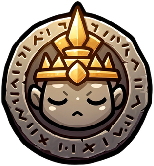

THE TEMPLE
PICK YOUR EXPEDITION
Every starter is exactly as lucky. Your pick decides who you set off with — not what you win.
HOW IT PAYS
One expedition runs the course. You set off with your starter and meet the other two at their obstacles — each one either gets through and JOINS YOUR PARTY, or is caught and left behind, stuck but never hurt (and sometimes pulled clear later, to catch you up). Everyone who gets through wins two elemental gems for the door rack. At the great door the party size is the payout tier: the door ignites its element, every gem matching its colour burns, and all of them burning opens the reliquary. The result is sealed on the seed, before you pick and before the first frame plays.
Show me a
demo control · real runs draw it
0×1×
tap to turn
the stake
The prize was drawn and locked when you picked your expedition, before the first frame played. Nothing in the descent changed it.
Your choice picks the run you watch, not the prize you get.
- Commit (shown before pick)
- Server seed (revealed)
- Your pick
- Nonce
- Run seed
- Exit
Published odds
retreat
20% · threshold 44% · chamber 28% · sanctum 7% · reliquary 1% (placeholder values from CONFIG.tierWeights; internal ids unchanged: getaway/floor/solid/grail/lockbox)